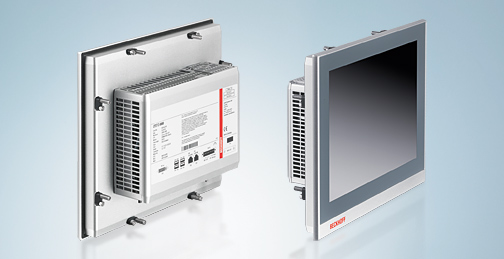

Een panel PC is bedoeld om ingebouwd te worden in de machinekast en van daaruit de machine aan te sturen. Het is de bedoeling dat de operator parameters kan wijzigen en de machine kan starten of stoppen aan de hand van de touchscreen interface.
Hoewel de hardware vergelijkbaar is met een industriële PC: ARM / x86 processoren, hoeveelheid RAM, opslag, ... is deze PC eerder vergelijkbaar met de industriële vorm van een tablet computer.

Ook op dit systeem draait vaak een SOFT PLC systeem zoals TwinCAT 3 of CODESYS. Via een ethernet interface communiceer je dan met verschillende IO eilanden over ETHERCAT, PROFINET, MODBUS/TCP, ....